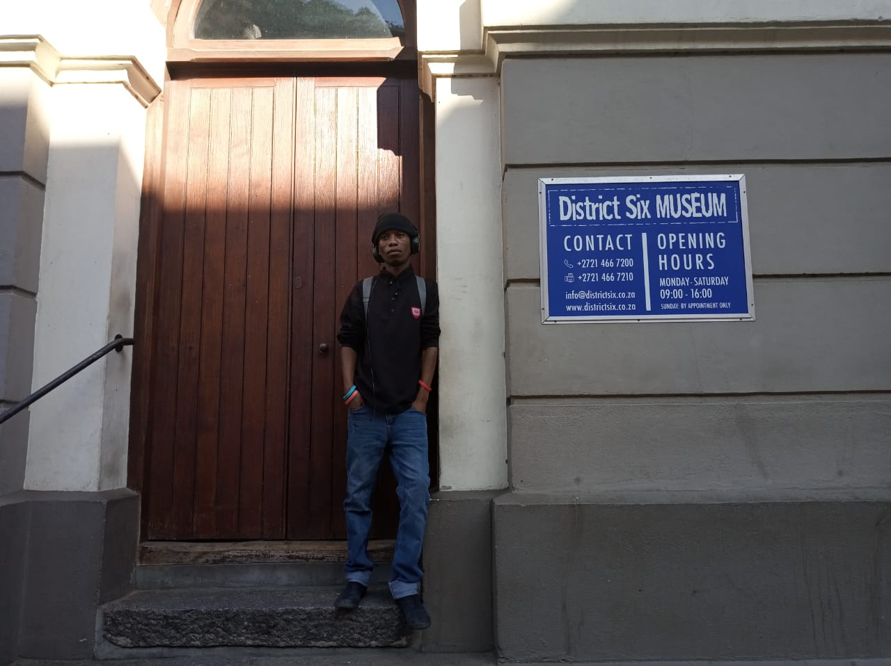

which City ?
Roman Italy.
- Many European cities still bear reminders of the power of ancient Rome, and throughout the
western world the influence of Roman power is still manifest. Architecture was crucial to
the success of Rome.
- Roman temples, while related to the Greek temple form in general design and use of the
Classical orders, represent a very defined category of temple form. The distinctive elements
of being raised on a podium, having a front staircase, and having the columns along the
sides being attached or engaged (pseudo-peripteral) allow for the easy identification of a
Roman temple. For a Roman citizen from Syria to England, the appearance of this form of
temple and the cult practices associated with it provided a sense of membership in the
empire.
- Echoes of the tradition of the Roman Empire are found in cities throughout the western
world. Nations and leaders to give visual testament to their authority and power have
emulated the distinct forms of Roman architecture.
A Foreign language
| English phrase |
Italian language translation |
| Mi scusi. |
Excuse me. |
| Buon giorno. |
Good morning. |
| Grazie |
Thank you. |
Historical places in Cape Town
District six

- District Six Museum is a museum in the former inner-city residential area and, District
Six, in Cape Town, South Africa in an old Methodist church.
- District Six Foundation was founded in 1989 and the museum in 1994, as a memorial to the
forced movement of 60,000 inhabitants of various races in District Six during Apartheid
in South Africa in the 1970s.
- The museum is dedicated to the construction of housing, environmental planning, and the
organisation of music, literature, and art activities, with the active involvement of
the public.
The slave Lodge

- The Slave Lodge was built in 1679, making it the second oldest existing colonial
structure of the Cape Colony, today known as Cape Town
- This building was changed many times and it is unclear how much of the existing
building dates from the slave period.
The building was used as a slave lodge until 1811 when it was changed into government
offices by the new British colonial authorities
- The Slave Lodge housed the slaves who belonged to the Dutch East India Company (VOC).
These slaves worked for the VOC and were never sold.
The Castle of good hope

- The Castle of Good Hope (Dutch: Kasteel de Goede Hoop; Afrikaans: Kasteel die Goeie
Hoop) known locally as the Castle[1] or Cape Town Castle[2] is a bastion fort built in
the 17th century in Cape Town, South Africa. Originally located on the coastline of
Table Bay, following land reclamation the fort is now located inland.
- Built by the Dutch East India Company between 1666 and 1679, the Castle is the oldest
existing building in South Africa.[4] It replaced an older fort called the Fort de Goede
Hoop which was constructed from clay and timber and built by Jan van Riebeeck upon his
arrival at the Cape of Good Hope in 1652.
- The purpose of the Dutch settlement in the Cape was to act as a replenishment station
for ships passing the treacherous coast around the Cape on long voyages between the
Netherlands and the Dutch East Indies (now Indonesia).